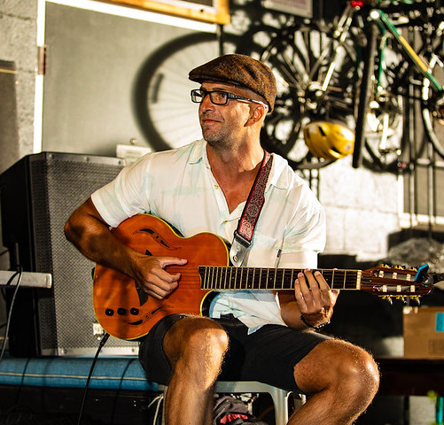

Musician and Software Engineer
Based on the island of Oahu, I am a full-stack web developer with a passion for solving challenging technical problems and a focus on TDD. With a creative and technical background in music and electrical/structural integrity engineering, I approach development analytically as well as creatively. I primarily work with Python, Django, Ruby, Ruby on Rails, and JavaScript. I currently work at Real Geeks as a Full Stack Software Engineer. I have previous experience working as an Integrity Engineer at Koch Pipline Company LLC, engineer in Advanced Design at Hawker Beechcraft, and freelance jazz musician/guitar instructor. In my free time I love to play and create music with other musicians. If I'm not playing music at a gig somewhere, then I'm most likely out on the ocean surfing or paddling.